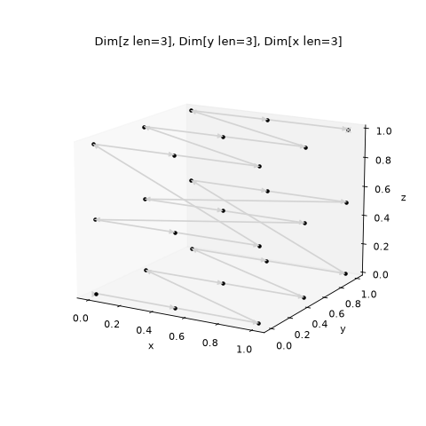
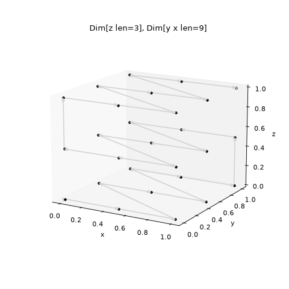
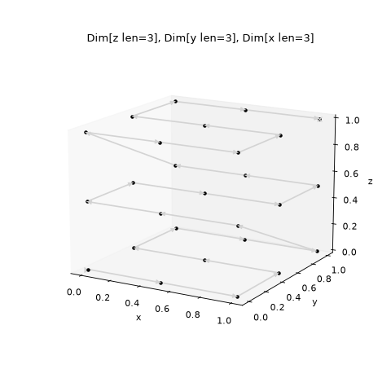
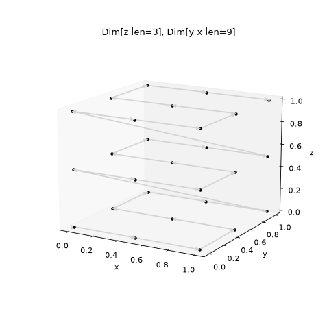

Why Squash (and Mask) can change the Path#
A Spec creates a stack of Dimension, some of which can be snaking. When snaking,
every other run of that Dimension object will run in reverse. Squash and Mask
will merge Dimensions objects together. This may change the Path compared with the
unsquashed version if the squashed Dimension objects are nested within a slower
Dimension object, and so run more than once. This page lists the times where this
is the case.
Note
The cases illustrated below will only be produced if
check_path_changes=False is passed to Squash or Mask, otherwise they
will fail with ValueError
Squash unsnaked axis into a snaked Dimensions#
Squashing Dimension objects together will take the snake setting of the slowest moving Dimension object in the squash. If this squashed Dimension object is nested within another, on the second run the originally unsnaked axis will run in reverse. This would make a motor that the user had demanded to always run in one direction run in reverse, which could make the scan invalid.
For example, consider a non-snaking x within a snaking y within z:
from scanspec.specs import Linspace
from scanspec.plot import plot_spec
spec = Linspace("z", 0, 1, 3) * ~Linspace("y", 0, 1, 3) * Linspace("x", 0, 1, 3)
plot_spec(spec)
(Source code, png, hires.png, pdf)
{kind=link}
{kind=link}

If we squash the x and y Dimension objects together then x will run in reverse on the second run:
from scanspec.specs import Linspace, Squash
from scanspec.plot import plot_spec
spec = Linspace("z", 0, 1, 3) * Squash(
~Linspace("y", 0, 1, 3) * Linspace("x", 0, 1, 3), check_path_changes=False
)
plot_spec(spec)
(Source code, png, hires.png, pdf)
{kind=link}
{kind=link}

Squash snaked axis into unsnaked odd length axis#
A snaked axis must repeat an even number of times within a squashed Dimension object in order to be able to nest this Dimension object within another and keep the Path of the snaked axis. If this is not the case, the snaked axis will “jump” after each iteration of the squashed Dimension object.
For example, consider a snaking x within an odd non-snaking y within z:
from scanspec.specs import Linspace
from scanspec.plot import plot_spec
spec = Linspace("z", 0, 1, 3) * Linspace("y", 0, 1, 3) * ~Linspace("x", 0, 1, 3)
plot_spec(spec)
(Source code, png, hires.png, pdf)
{kind=link}
{kind=link}

If we squash the x and y Dimension objects then x will jump between the first and second runs:
from scanspec.specs import Linspace, Squash
from scanspec.plot import plot_spec
spec = Linspace("z", 0, 1, 3) * Squash(
Linspace("y", 0, 1, 3) * ~Linspace("x", 0, 1, 3), check_path_changes=False
)
plot_spec(spec)
(Source code, png, hires.png, pdf)
{kind=link}
{kind=link}

Why this matters#
Apart from these two cases, squashing can be considered Path invariant. This means that the detector could write data in a stack, then the data could be reshaped with a VDS into the original dimensionality. Unfortunately a negative stride is not supported in VDS, so the strategy is to squash snaked Dimension objects into the Dimension object above. If this changes the Path through a scan then this needs to be flagged or explicitly allowed in the Spec, otherwise the results for the user could be potentially surprising.